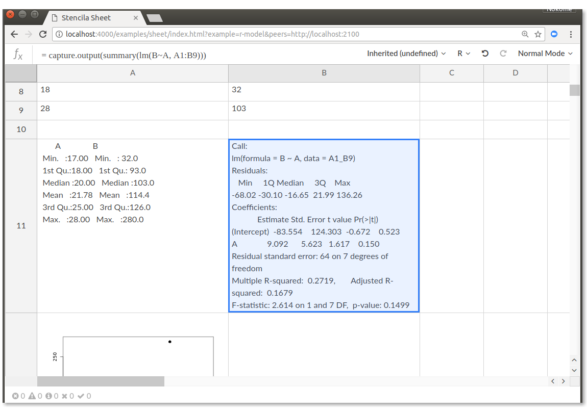

class: center, middle ## Bridging the reproducibility gap: an introduction to Stencila <img src="logo-name.svg" width="400" /> #### Harvard Medical School #### Boston, USA #### 31 July 2018 <div> <a href="https://twitter.com/NokomeBentley">@NokomeBentley</a> <a href="https://twitter.com/stencila">@stencila</a> </div> <p style="position: absolute; bottom: 10px; font-size: 10px">Press <code>P</code> to switch to presenter mode</p> --- class: center, middle ### Researchers are under increasing pressure to make their research reproducible  ??? There is growing recognition, including in the mainstream media, of a so called "reproducibility crisis" in science. And the calls for researchers to make their research more reproducible are growing louder. Researchers, from digital humanities, to neuroscience, to data driven journalism are being encouraged to make their work open, transparent and reproducible. --- class: center, middle --- class: center, middle <img src="research-outputs.png"> --- class: center, middle ### Creating reproducible research can be difficult... particularly if you don't know how to code. ??? Creating reproducible research can be difficult, particularly if you're not a coder. That's not surprising, the tools for reproducible research have been created by researchers at the "codey" end of the spectrum. They, like me, have been "scratching their own itch" and creating tools that they, as coders, find useful. But for people who are less comfortable with code, that can be intimidating - it creates a barrier to entry which alienates them from reproducible practices. --- class: center, middle <video class="centered" height="580px" controls="controls" autoplay="" loop=""> <source src="doc-screencast.mp4" type="video/mp4"> </video> ??? That is the approach that we have been taking with Stencila. We're trying to create user interfaces for doing reproducible research that are familiar, and thus intuitive, to most researchers. Here is an example of a Stencila document. It's a research article which provides simple tabular and graphical summaries of some ecological data. The interface is similar to a stripped down version of Microsoft Word. You can do the usual things that people do with textual documents: insert text and paragraphs, create headings etc. But in addition, you can insert cells of code, in this case R code, that produce the figures and tables. You can update that code, in place in the document. A key aspect is that code and it's output are in the same place, right next to each other. Internally, the code gets carried through with the document from authoring through to publication. --- class: center, middle ### A revolution in education... marriage of word processing and software command scripts .note[Claerbou, Jon F., and Martin Karrenfach. "Electronic documents give reproducible research a new meaning." 1992 SEG Annual Meeting. Society of Exploration Geophysicists, 1992. https://doi.org/10.1190/1.1822162.] --- class: center, middle <img src="marwick-higgins-tweets.png" height="600px"> ??? That situation is captured well in this Twitter conversation. Ben Marwick, an archaeologist and strong advocate for reproducible research, tweeted that journal editors should demand sharing code. The Twitterverse responded enthusiastically with retweets and likes. But there was a lone reply from Peter Higgins, a biomedical researcher, who pointed out that while that is an admirable goal, in his field they are "so not ready" to share code, simply because most people still use Excel. --- class: center, middle <img src="tool-usage.png" height="450px"> .note[Life science researchers. Courtesy of Naomi Penfold, eLife] --- class: center, middle ### Moving tools for reproducibility further **towards the user**... an "office suite" for reproducible research? ??? Currently, the primary strategy for making more research reproducible is to encourage researchers to move towards the existing code-based tools. Organizations like Data Carpentry do a great job of that by teaching researchers to learn to code and use these tools. But an additional, complementary, strategy might be to **move the tools towards the user**. And a lot, if not most, research activity lives in a world of the office suite: spreadsheets and word processors. --- class: center, middle <video class="centered" height="580px" controls="controls" autoplay="" loop=""> <source src="sheet-screencast.mp4" type="video/mp4"> </video> ??? One of the first bits of feedback we got from people when we presented Stencila documents was "what about all the people that don't know how to code, those who use Excel, how does this help them?" I was one of those researchers who had moved away from spreadsheets and had forgotten how many people still use them. We realised that we could take the technology which we had developed for embedding code cells in a document and essentially just reshape it into the familiar grid of a spreadsheet. This is a prototype of a Stencila sheets that we created 18 months ago. What sets this prototype apart from Excel is that the formulas in the cells are actually bits of R code. The system works out the dependencies between those cells of R code and when you change one cell all the other cells that depend on it get updated. --- class: center, middle ## Where we are, where we are going... ### 1. Prototypes ### 2. Minimum viable product (MVP), testing and feedback ### 3. Version 1.0 ### 4. Project sustainability! --- class: center ## Approach ### .good[Collaboration continuum]: between clickers and coders - one document, multiple interfaces ### .good[Learning continuum]: between clicking and coding - "low floor, high ceiling" ### .good[Reproducibility continuum]: across authoring, collaboration, editing, reviewing, publishing and reading --- class: center, middle  .small[Marwick, B. (2017). Computational reproducibility in archaeological research: basic principles and a case study of their implementation. Journal of Archaeological Method and Theory, 24 (2), 424-450.] --- class: center, middle ### A simple notebook viewed in Jupyter  --- ### Jupyter Notebook: a list of Markdown and code cells ```json { "cells": [ { "cell_type": "markdown", "metadata": {}, "source": [ "# A section heading\n", "\n", "A paragraph with a [link](http://jupyter.org) in it.\n", "\n", "## A subsection heading" ] }, { "cell_type": "code", "execution_count": 5, "metadata": {}, "outputs": [ { "data": { "text/html": [ "<div>\n", "<style scoped>\n", " .dataframe tbody tr th:only-of-type {\n", " vertical-align: middle;\n", " }\n", "\n", " .dataframe tbody tr th {\n", " vertical-align: top;\n", " }\n", "\n", ``` --- ### Stencila documents: a *tree* of structured prose, code and data *nodes* ```json { "type": "Document", "body": [ { "type": "Header", "level": 1, "attrs": {}, "nodes": [ { "type": "String", "data": "A section heading" } ] }, { "type": "Para", "nodes": [ { "type": "String", "data": "A paragraph with a " }, { "type": "Link", "target": "http://jupyter.org", "nodes": [ { "type": "String", "data": "link" } ] }, { "type": "Space" }, ``` --- ### Stencila documents: data is also part of the document tree ```json { "type": "CodeBlock", "attrs": { "class": "python", "code-type": "jupyter", "executable": "yes" }, "code": "import pandas\nimport numpy\npandas.DataFrame(numpy.random.randn(6,4), columns=list('ABCD'))", "outputs": [ { "value": { "type":"table", "data": { "A": { "type":"number", "values":[-1.42793054373484,-0.5156679462892363,-0.19961176421230042,0.058030728598233,1.2410195025721178,1.0126885191678625] }, "B": { "type":"number", "values":[0.542922425631757,-0.48395721582137385,-0.5187478206902519,1.3713438395979975,1.3826186096937894,0.8073488111294579] }, "C": { "type":"number", "values":[0.17772276160256112,-1.7446587931952764,-1.655976881390659,-0.29141755888676774,-0.888378116635049,-1.0355396977317772] }, "D": { "type":"number", "values":[0.733804846623581,0.11206235162674136,-0.6139173043590114,-0.8149160751325456,-0.8229718069630149,0.2842881172325804] } } } } ``` --- class: center, middle ## Simple notebook viewed in Stencila  --- class: center, middle # Demos  --- class: center, middle # Reinvention not reimplementation! ??? There is no point in trying to simply create an open source Excel - that already exists in software like Open Office. We're not trying to reinvent the wheel, but we *are* trying to reinvent the vehicle! We do want to re-examine and re-imagine, from the foundations up, what is a spreadsheet is. We're intentionally trying to create something that on the surface looks like Microsoft Excel or Google Sheets. But underneath we want to reinforce the things makes spreadsheets great, leave behind the things that are bad, and add some of the things that we've learned, over the last 38 seven years since VisiCalc was created, about reproducibility and software design. --- class: center, middle ### Flexibility with encouragement towards good practices: .good[issue checker and metrics] --- class: center, middle ### Avoiding conflation of formats and information: .good[no ad-hoc formatting!] --- class: center, middle ### Avoiding auto-conversion and data-entry errors: .good[strong typing] --- class: center, middle ### Integration with open-source languages: .good[cells in external languages]  --- class: center, middle ### Batteries included: .good[open-source, community-curated, function libraries] .note["libcore" our equivalent of Excel's core function library (e.g. `SUM`, `T.TEST`)] --- class: center, middle ### Batteries included: .good[domain-specific function libraries]  --- class: center, middle ### Improving testing of spreadsheets: .good[test cells]  --- class: middle ### Discussion - how might you use Stencila in your workflows? - what tools that you already use would you like Stencila to integrate with? - ideas! --- class: center, middle ### Thank you for your input! <img src="funders-partners.png" width="600px">